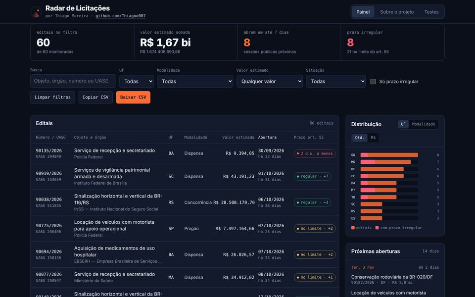
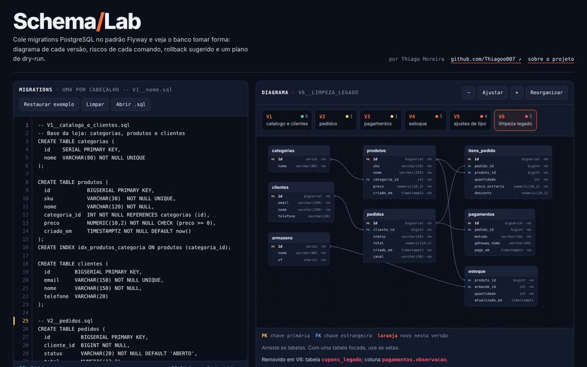
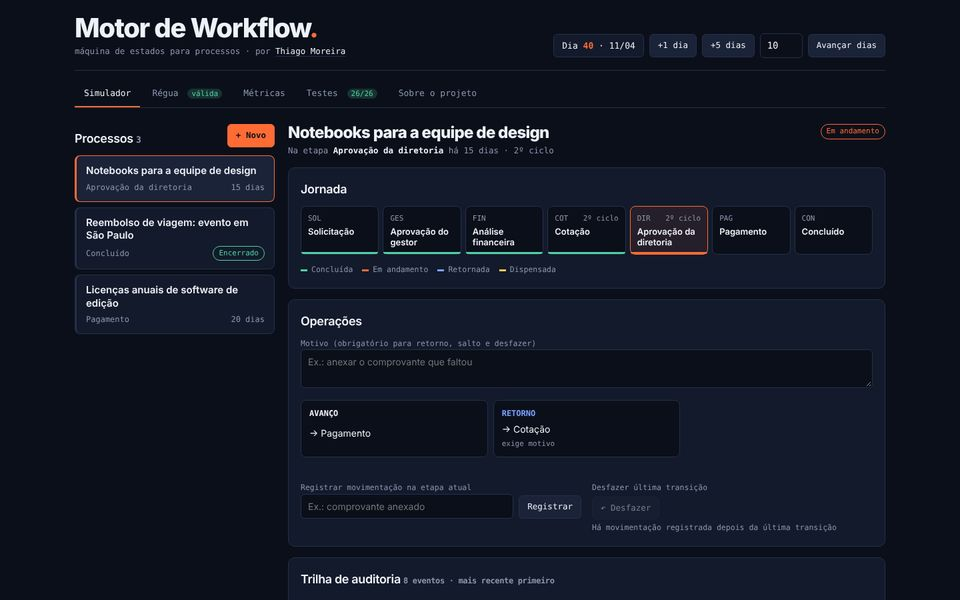
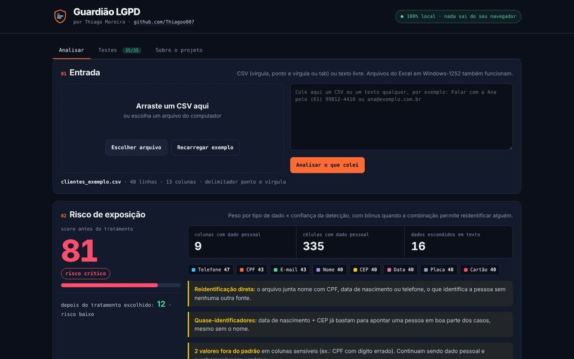
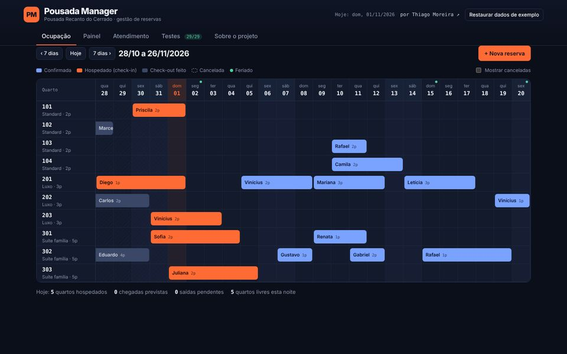

Suporte técnico
IESB · estágio
Suporte a alunos e funcionários em hardware e software, rede e servidores locais e apoio a novos projetos de TI.
// desenvolvedor de software · Brasília, DF
Desenvolvo sistemas web de ponta a ponta: APIs em Java e Spring Boot, interfaces em Angular e integrações com IA, com código testado e entregas que sobem sem susto.
| V2024.02 | suporte_tecnico_iesb | SUCCESS |
| V2024.10 | analista_bi_cldf | SUCCESS |
| V2026.02 | ads_iesb_concluido | SUCCESS |
| V2026.02 | analista_dev_ste_engenharia | SUCCESS |
| V2026 | dev_hux_tecnologia | SUCCESS |
| V2026 | seguranca_informacao_unb_dnit | SUCCESS |
| Vnext | proximo_desafio | PENDING |
Sou desenvolvedor na STE Engenharia e na HUX Tecnologia, criando sistemas web para o setor público e plataformas próprias, do backend à interface.
Sou formado em Análise e Desenvolvimento de Sistemas pelo Centro Universitário IESB, em Brasília. No dia a dia escrevo APIs REST em Java e Spring Boot, telas em Angular e TypeScript, regras de negócio e testes automatizados, e uso IA no fluxo de desenvolvimento.
Antes disso, fui Analista de BI na Câmara Legislativa do Distrito Federal, com Power BI, SQL e ETL, e passei pelo suporte técnico do IESB. Essa bagagem me ajuda a entender o problema de quem usa o sistema antes de escrever a primeira linha.
Gosto de transformar regra de negócio difícil em código simples de manter. Fora do trabalho, desenvolvo meus próprios produtos: CRM, gestão de hospedagem, bot de atendimento, loja virtual e um app de acessibilidade com IA.
Como eu trabalho
Código com teste desde o primeiro commit.
Por funcionalidade, fáceis de revisar e de reverter.
Revisão humana em tudo que vai para produção.
Regra de negócio se confirma, não se adivinha.
Suporte a alunos e funcionários em hardware e software, rede e servidores locais e apoio a novos projetos de TI.
Dashboards em Power BI com SQL, análise de grandes volumes de dados e processos de ETL.
Sistemas web com Java e Spring Boot, Angular e PostgreSQL: APIs REST, regras de negócio, testes e entregas versionadas.
Desenvolvimento das plataformas próprias da empresa, como o Conecta CRM, de gestão de associados, e o cadastro e acesso por reconhecimento facial.
“Excelente postura profissional e vontade de aprender.”
Fábio Virgílio de Souza Neves · CLDF

Calcula os prazos mínimos de publicação do art. 55 em dias úteis, com feriados móveis, e aponta editais com prazo irregular. Filtros, gráfico por UF e exportação em CSV.

Cole migrations no padrão Flyway e veja o diagrama em cada versão, os riscos de cada comando, o rollback e um roteiro de dry-run.

Fluxo de etapas com avanço, retorno, salto, dispensa em cascata e desfazer, trilha de auditoria imutável e métricas de gargalo.

Detecta e valida CPF, CNPJ, e-mail, telefone e cartão em planilhas, mede o risco de exposição e mascara, pseudonimiza ou generaliza cada coluna.

Reservas sem overbooking, tarifa noite a noite, check-in e check-out, painel com ocupação e RevPAR e um chatbot que consulta a disponibilidade real.
Outros projetos
Uso o Claude, da Anthropic, como par de programação: ele lê o código, investiga bugs, escreve testes e implementa comigo, e eu reviso tudo antes de ir para produção.
Processo de engenharia de verdade: pensar antes, planejar, testar primeiro e provar que funciona.
Estilos, paletas, tipografia e revisão de UX para interfaces bonitas desde o primeiro rascunho.
O Claude abre o sistema num navegador de verdade, clica, tira print e confere. Nada é pronto sem teste na tela.
APIs, regras de negócio e integrações
Telas rápidas, claras e responsivas
Consultas, relatórios e análise
Do commit à produção com segurança
Vamos conversar.
Aberto a projetos, parcerias e boas conversas sobre desenvolvimento web, IA e sistemas para o setor público.
© 2026 Thiago Moreira · Brasília, DF